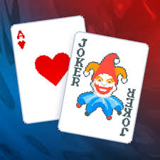

Balatro es un videojuego independiente de construcción de mazos (deck-builder) con temática de póquer, lanzado el 20 de febrero de 2024 para PC y consolas, y más tarde para dispositivos móviles. En cada partida el jugador debe crear manos válidas de póquer, utilizar comodines (“jokers”) especiales y derrotar “blind bosses” antes de agotar sus descartes. Su estilo combina mecánicas roguelike, cartas modificadoras y un enfoque experimental que lo ha hecho destacar en la escena indie.
El juego fue desarrollado por LocalThunk (un desarrollador independiente) y publicado por Playstack. La producción surgió como un proyecto en solitario que terminó transformándose en un éxito global, gracias a su propuesta audaz, su estilo visual peculiar y su fusión entre póquer tradicional y diseño roguelike.
Desde su lanzamiento, Balatro ha recibido elogios por su jugabilidad y ventas millonarias, y se ha anunciado una gran actualización gratuita para 2025 que introducirá nuevas mecánicas, aún sin fecha concreta. Esta expansión reforzará la experiencia con nuevos jokers, modos de juego y probablemente más contenidos desafiantes, lo que demuestra que el estudio sigue comprometido con el título.